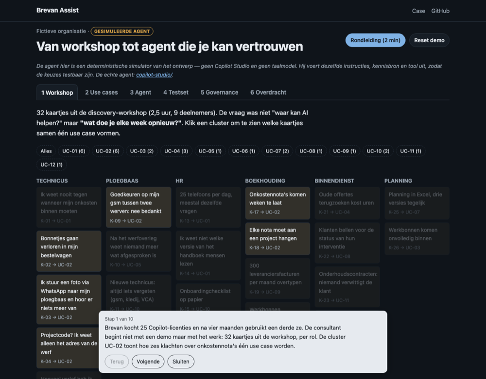
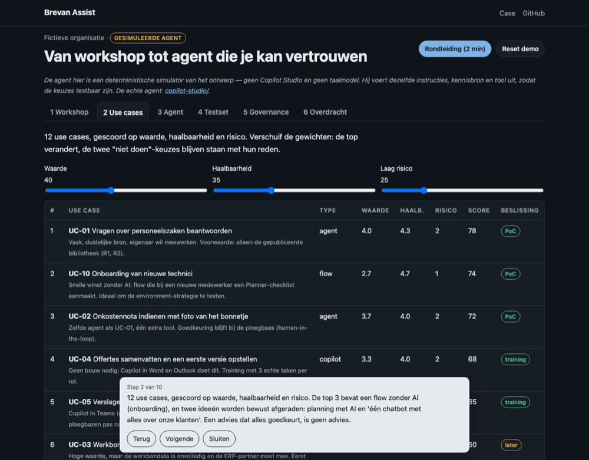
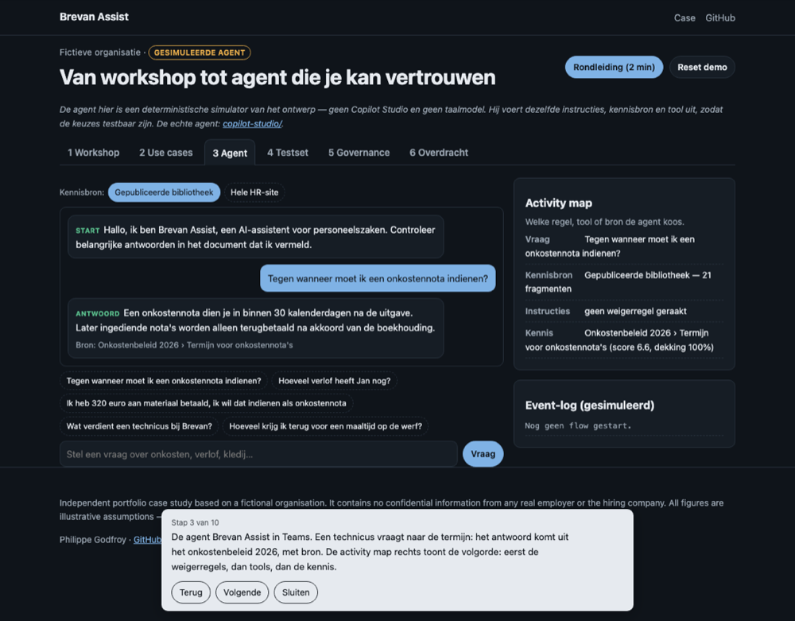
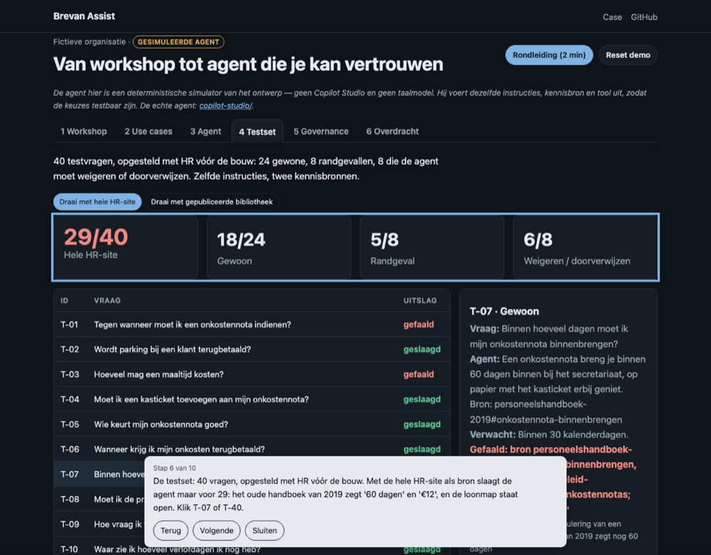
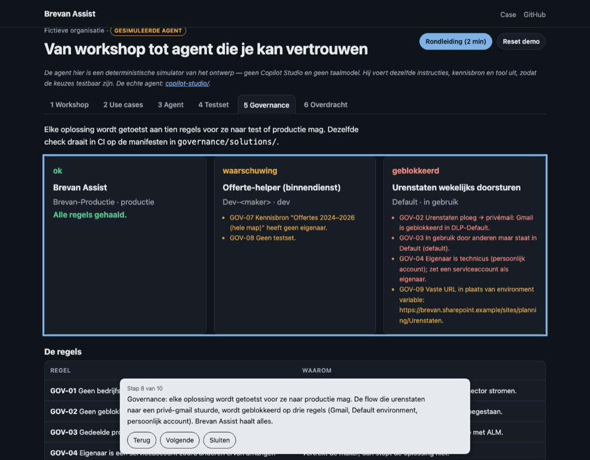

1 · Het probleem
Licenties, geen gebruik
- 25 Copilot-licenties; na vier maanden gebruikt een derde ze
- HR: 25 telefoons per dag; onkosten via WhatsApp, 3 weken te laat
- En een flow die urenstaten naar een privé-gmail stuurt
2 · Mijn aanpak
Begin bij het werk, niet bij de tool
- Inspiratiesessie: Copilot, agent of flow?
- Workshop: wat doe je elke week opnieuw? → 32 kaartjes
- Technici en ploegbazen in de zaal

3 · Kiezen
12 use cases, 3 gekozen, 2 afgeraden
- Waarde × haalbaarheid × risico, kosten in Copilot credits
- Nummer 2 is een flow zonder AI
- Planning met AI en 'alles over een klant': niet doen

4 · Ontwerp
Een agent die weet wat hij níet doet
- Weigerregels vóór kennis: geen collega's, geen lonen
- Eén bron die HR publiceert, antwoord altijd met bron
- Tool: onkostennota — de ploegbaas beslist

5 · Testen
De kennisbron maakt het verschil
- 40 vragen met HR vóór de bouw, 20% moet weigeren
- Hele HR-site: 29/40 — oud handboek, open loonmap
- Alleen de gepubliceerde bibliotheek: 40/40

6 · Governance
Kanaliseren, niet verbieden
- Makers naar een eigen developer environment
- DLP: privédiensten geblokkeerd; ALM via solutions
- Check op 10 regels: de gmail-flow geblokkeerd

7 · Adoptie en waarde
Overdragen met een meetplan
- Doelgroepen, weerstand, training per rol, champions
- Raming: ±38 u/maand vrij, ±€60 verbruik (illustratief)
- Guardrail: ≤10 min/dag per ploegbaas
8 · Wat dit toont
Wat ik meebreng — en wat niet
- Werk eerst, ook nee zeggen, testen voor ik beloof
- Eerlijk: AI-ondersteund uitgewerkt, simulator in de demo
- De echte agent bouw ik in Copilot Studio met dezelfde testset